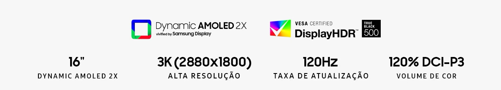

Mergulhe na tela com resolução 3K (2880 x 1800) fotorrealista do Galaxy Book3 Ultra. A vibrante tela de 16 polegadas oferece uma incrível experiência de visualização e criação de nível ultra, ainda mais suave com 120 Hz.
* Imagens meramente ilustrativas. ** O tamanho da tela varia de acordo com o modelo. *** O tamanho da tela é medido diagonalmente como um retângulo completo, sem considerar os cantos arredondados. A área visível real é menor devido aos cantos arredondados. **** A emissão de luz azul é reduzida em comparação com os monitores LCD convencionais. ***** A taxa de atualização do display se ajusta entre 48 e 120 Hz, com base no conteúdo que você está visualizando.